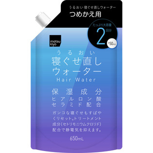

返回列表
产品名称：ｍａｔｓｕｋｉｙｏ アレンジプラス 寝ぐせ直しウォーター詰替 大容量

ティーアンドワイ ｍａｔｓｕｋｉｙｏ アレンジプラス 寝ぐせ直しウォーター詰替 大容量 ６５０ｍｌ詰替大容量
メーカー ティーアンドワイ
JANコード 4529594250531
商品の特徴
アレンジプラススタイリングシリーズの【寝ぐせ直しウォーター】です。
がんこな寝ぐせをしっかりまとめ、髪しっとりつやつやに補正し直します。
詰替え大容量タイプです。
成分・分量
【成分】
水、エタノール、ＢＧ、セトリモニウムクロリド、セラミド３、ヒアルロン酸Ｎａ、ラウリルグルキシド、フェノキシエタノール、メチルパラベン
用法及び用量
【使用方法】
１、スプレーの上部を取り外します。
２、上部にあるキャップを開けてください。
３、注ぎ口をボトルの口に差込みゆっくりと注いでください。